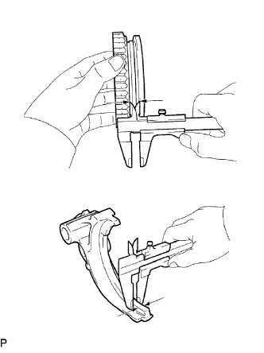

TRỤC THỨ CẤP > THÁO |
| 1. KIỂM TRA KHE HỞ DỌC TRỤC BÁNH RĂNG SỐ 1 |
Dùng đồng hồ so, đo khe hở hướng trục.
| 2. KIỂM TRA KHE HỞ DỌC TRỤC BÁNH RĂNG SỐ 2 |
Dùng đồng hồ so, đo khe hở hướng trục.
| 3. KIỂM TRA KHE HỞ DỌC TRỤC BÁNH RĂNG SỐ 3 |
Dùng thước lá, đo khe hở dọc trục.
| 4. KIỂM TRA KHE HỞ HƯỚNG KÍNH BÁNH RĂNG SỐ 1 |
 |
Dùng đồng hồ so, đo khe hở hướng kính.
| 5. KIỂM TRA KHE HỞ HƯỚNG KÍNH BÁNH RĂNG SỐ 2 |
Dùng đồng hồ so, đo khe hở hướng kính.
| 6. KIỂM TRA KHE HỞ HƯỚNG KÍNH BÁNH RĂNG SỐ 3 |
Dùng đồng hồ so, đo khe hở hướng kính.
| 7. THÁO BÁNH RĂNG DẪN ĐỘNG ĐỒNG HỒ TỐC ĐỘ |
 |
Dùng kìm tháo phanh, tháo phanh hãm.
Tháo bánh răng dẫn động.
Dùng đũa nam châm, hãy tháo viên bi thép.
Dùng kìm tháo phanh, lắp phanh hãm khác.
| 8. THÁO BÁNH RĂNG SỐ 1 |
Dùng 2 tô vít và một búa, đóng phanh hãm ra khỏi trục thứ cấp.
Dùng SST và máy ép, ép tháo bánh răng số 5, vòng bi giữa, bánh răng số 1, vòng bi đũa kim bánh răng số 1 và vành trong của vòng bi bánh răng số 1 ra khỏi trục thứ cấp.
| 9. THÁO VÀNH ĐỒNG TỐC NO.1 (cho bánh răng số 1) |
Tháo vành đồng tốc No.1 (cho bánh răng số 1) ra khỏi moay ơ đồng tốc No.1.
| 10. THÁO BI HÃM VÀNH TRONG VÒNG BI BÁNH RĂNG SỐ 1 |
Dùng đũa nam châm, hãy tháo viên hãm.
| 11. THÁO BÁNH RĂNG SỐ 2 |
 |
Dùng SST và máy ép, ép moay ơ đồng tốc No.1, bánh răng số lùi, vành đồng tốc No.1 và bánh răng số 2 ra.
| 12. THÁO VÀNH ĐỒNG TỐC NO.1 (cho bánh răng số 2) |
 |
Tháo vành đồng tốc No.1 ra khỏi bánh răng số 2.
| 13. THÁO VÒNG BI ĐŨA KIM BÁNH RĂNG SỐ 2 |
Tháo vòng bi đũa kim ra khỏi trục thứ cấp.
| 14. THÁO MOAYƠ ĐỒNG TỐC NO.1 |
Tháo 2 lò xo khoá đồng tốc.
Tháo bánh răng số lùi và 3 khoá hãm đồng tốc ra khỏi moay ơ đồng tốc hộp số.
| 15. THÁO BÁNH RĂNG SỐ 3 |
Dùng kìm tháo phanh, tháo phanh hãm ra khỏi trục thứ cấp
 |
Dùng máy ép, ép moay ơ đồng tốc No.2 và bánh răng số 3.
| 16. THÁO VÀNH ĐỒNG TỐC NO.2 |
Tháo vòng đồng tốc ra khỏi bánh răng số 3.
| 17. THÁO VÒNG BI ĐŨA KIM BÁNH RĂNG SỐ 3 |
Tháo vòng bi đũa kim ra khỏi trục thứ cấp.
| 18. THÁO MOAYƠ ĐỒNG TỐC NO.2 |
Tháo 2 lò xo khoá đồng tốc.
Tháo ống trượt gài số và 3 khoá hãm đồng tốc ra khỏi moay ơ đồng tốc hộp số.
| 19. KIỂM TRA TRỤC THỨ CẤP |
Dùng Panme, đo đường kính ngoài của mặt cổ trục thứ cấp.
| Vị trí | Điều kiện tiêu chuẩn |
| Phần A | 34.984 đến 35.000 mm (1.3773 đến 1.3780 in.) |
| Phần B | 37.984 đến 38.000 mm (1.4945 đến 1.4960 in.) |
| Phần C | 30.384 đến 30.400 mm (1.1962 đến 1.1968 in.) |
| Phần D | 30.002 đến 30.018 mm (1.1812 đến 1.1818 in.) |
Dùng Panme, đo độ dày mặt bích.
| 20. KIỂM TRA VÀNH TRONG CỦA VÒNG BI BÁNH RĂNG SỐ 1 |
Dùng Panme, đo độ dày của vành trong.
Dùng Panme, đo đường kính ngoài của vành trong.
| 21. KIỂM TRA VÀNH ĐỒNG TỐC NO.1 (cho bánh răng số 1) |
Bôi dầu bánh răng lên mặt côn của bánh răng số 1. Kiểm tra hiệu quả đồng tốc của vành đồng tốc No.1. Lắp vòng đồng tốc và mặt côn của trục. Tác dụng lực ép vào vòng đồng tốc để thử quay nó theo cả hai chiều. Kiểm tra rằng vòng đồng tốc bị khoá.
Kiểm tra lại hiệu quả đồng tốc của vành đồng tốc No.1
Dùng thước lá, đo khe hở giữa lưng của vành đồng tốc No.1 và mặt đầu then hoa bánh răng số 1.
| 22. KIỂM TRA VÀNH ĐỒNG TỐC NO.1 (cho bánh răng số 2) |
Bôi dầu bánh răng lên mặt côn của bánh răng số 2. Kiểm tra hiệu quả đồng tốc của vành đồng tốc No.1. Lắp vòng đồng tốc và mặt côn của trục. Tác dụng lực ép vào vòng đồng tốc để thử quay nó theo cả hai chiều. Kiểm tra rằng vòng đồng tốc bị khoá.
Kiểm tra lại hiệu quả đồng tốc của vành đồng tốc No.1
Dùng thước lá, đo khe hở giữa lưng của vành đồng tốc No.1 và mặt đầu then hoa bánh răng số 2.
| 23. KIỂM TRA VÀNH ĐỒNG TỐC NO.2 |
Bôi dầu bánh răng lên mặt côn của bánh răng số 3. Kiểm tra hiệu quả đồng tốc của vành đồng tốc No.2. Lắp vòng đồng tốc và mặt côn của trục. Tác dụng lực ép vào vòng đồng tốc để thử quay nó theo cả hai chiều. Kiểm tra rằng vòng đồng tốc bị khoá.
Kiểm tra lại hiệu quả đồng tốc của vành đồng tốc No.2
Dùng thước lá, đo khe hở giữa lưng của vành đồng tốc No.2 và mặt đầu then hoa bánh răng số 3.
| 24. KIỂM TRA BÁNH RĂNG SỐ LÙI |
|  |
Dùng một thước cặp, đo khe hở giữa bánh răng số lùi và càng chuyển số bánh răng No.1.
 |
Kiểm tra rằng moayơ đồng tốc No.1 và bánh răng số lùi trượt êm vào nhau.
Kiểm tra rằng mặt đầu của bánh răng số lùi không bi mòn.
| 25. KIỂM TRA ỐNG TRƯỢT GÀI SỐ NO.2 |
Dùng thước cặp, đo ống trượt gài số No.2 và càng chuyển số bánh răng No.2 như được chỉ ra trên hình vẽ.
 |
Kiểm tra tình trạng trượt giữa ống trượt gài số No.2 và moayơ đồng tốc No.2.
Kiểm tra rằng mặt đầu của bánh răng của ống trượt gài số No.2 không bi mòn.
| 26. KIỂM TRA BÁNH RĂNG SỐ 1 |
Dùng đồng hồ đo xilanh, đo đường kính trong của bánh răng số 1.
| 27. KIỂM TRA BÁNH RĂNG SỐ 2 |
 |
Dùng đồng hồ đo xilanh, đo đường kính trong của bánh răng số 2.
| 28. KIỂM TRA BÁNH RĂNG SỐ 3 |
Dùng đồng hồ đo xilanh, đo đường kính trong của bánh răng số 3..